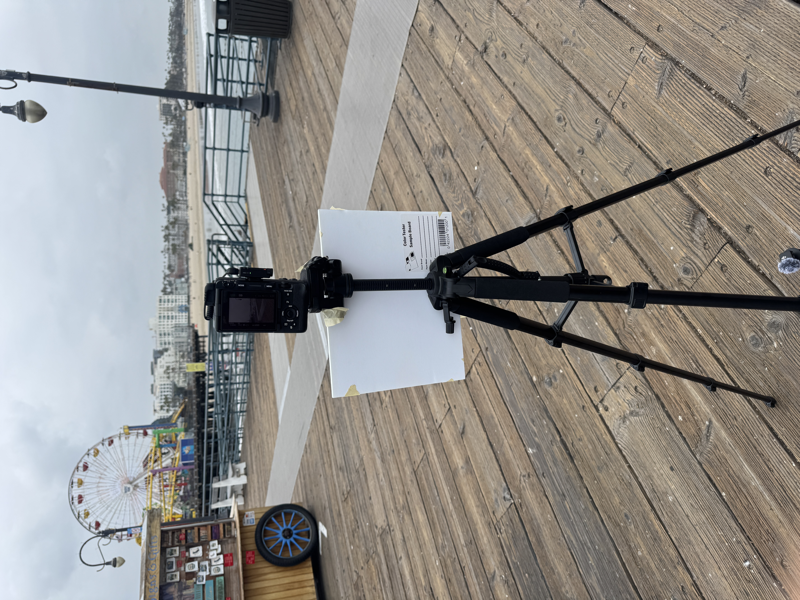
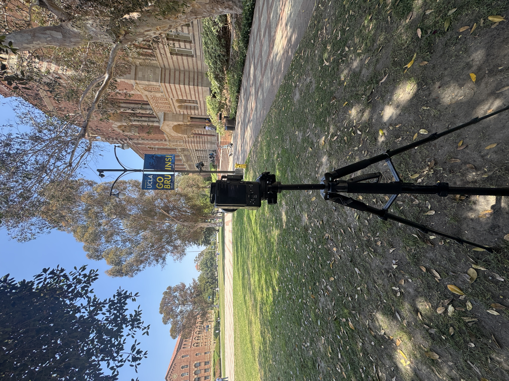
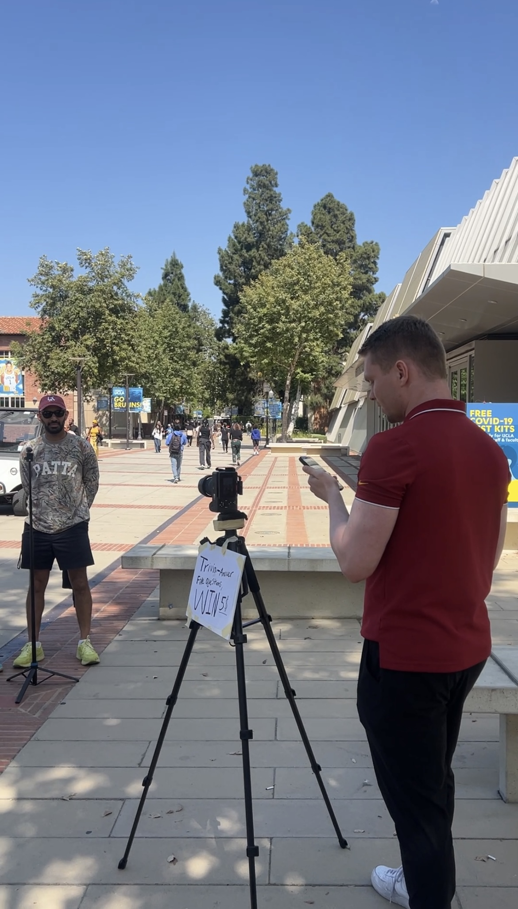
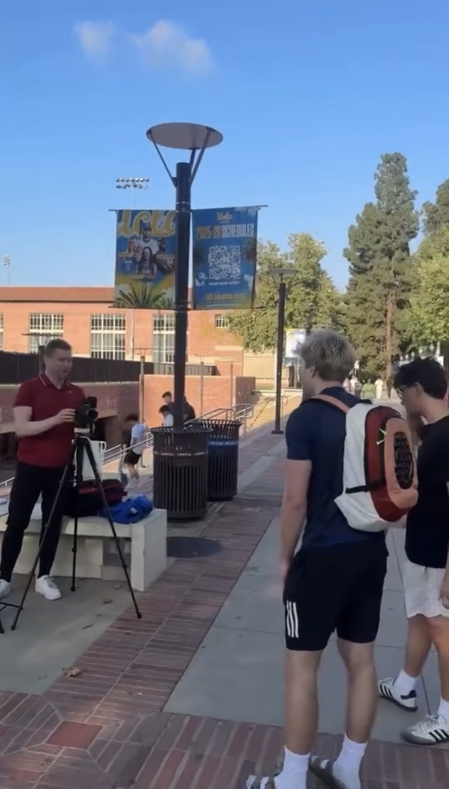

After moving back to LA on May 15th — just over a week ago — I committed to doing interview-style social content, which is something I've been putting off for a while now.
However, as I discussed in my Eric Suarez post, I thought that the best way to do social media forward — both to have as much success as fast as possible and to have the best chance at sustained success — was to switch to an interview-style video format.
After a 4-month hiatus to Colorado from January–April and a 2-week hiatus in the first half of May as I waited for my sublet to expire for my apartment on May 15th, I went ahead and did over 20–25 street interviews across USC, UCLA, and the Santa Monica Pier over the last ~10 days or so.
I did 6 on May 15th at USC, 2 on the Santa Monica Pier, and then about ~15–20 at UCLA.

My tripod setup at the Santa Monica Pier.



Me filming street interviews at UCLA
While there's obviously no guarantee that I'll be successful, I've already learned A LOT from the experience so far and wanted to write those insights down while they're fresh.
If my observations turn out to be right, I might've just figured out a formula for consistent virality and success on social media.
To drive home the concept, I'm going to employ Steven He's method of drawing from real-world analogies.
Main Lesson: It Probably Isn't Your Content That Sucks... It's the Context
This last Friday night from 7–8 PM and Saturday from about 9 AM–6 PM, I did street interviews at both the Santa Monica Pier and at UCLA. While doing interviews at both places, I had drastically different results.
Something I figured out — or at least think I figured out — is that your CONTEXT matters just as much as your CONTENT.
For example, when I went to Santa Monica, I got only TWO interviews over the course of two hours of being fully set up there.
Initially, I thought it would be a great place to film since there's a lot of tourists there, people out and about, in a good mood, dressed nice (i.e. camera-ready), and since there's always a huge influx of new people. But that wasn't the case.
So I packed my bags and went to UCLA to see if I could get at least a few more videos than that.
I went to UCLA since while USC's campus was dead — graduation was the week prior — UCLA still had another month of school beyond that.
And after nearly an hour of walking around campus procrastinating and being scared to start, I finally got set up. Let me tell you — Santa Monica is whatever if I get rejected, but I was honestly terrified to do this on a campus, especially UCLA or USC, since this was essentially my "home territory."
After waiting for maybe 30–45 minutes, I finally got the first two people to do a video, then once people saw me recording, a crowd of people and a line started forming of people waiting to get on.
It was a COMPLETELY DIFFERENT experience from filming in Santa Monica, where it was hard to get ANYBODY to come on.
Once things got going at UCLA, I was on a roll, and eventually I think I knocked out probably 15–20 videos in that single afternoon/evening.
I did the exact same thing. I created the same type of content in both places. But the reason I was able to create ~20 videos at UCLA and only ~2 at Santa Monica was because of the context. My content, my messaging, my format was exactly the same — but the audience was completely different.
In interview formats specifically, I think that there's not just one audience, but instead TWO audiences who you need to find a good "product-market fit" (or "Content-Audience fit") for — both the people you're interviewing, and your online audience.
You need to find the intersection of the two in order to be successful.
If you ask people you're interviewing questions they don't like, then you won't be able to get them on camera in the first place.
For example, when I asked simple career advice questions at USC's graduation, like "what's your best piece of advice for someone who wants to get into USC?" or "what's your best piece of advice for someone looking for their first job?" — people mostly passed on those questions.
But when I did a fun trivia quiz or "5 fun questions" style format, a lot more people were willing to go on camera since it was more fun and something they were more willing to do.
I think that, as the interviewer, it's your job to think of questions that make it as easy as possible for the interviewee(s) to answer in a way which will allow them to perform their best on video.
Then there's what the audience online wants. Again, as I mentioned in the Eric Suarez article, I think that interviews are a very hot format right now which is outperforming a ton of others — so the PMF with the online audience is probably taken care of there.
But going back to the most important point — the "Pier vs UCLA" comparison — I think that content creation is just as much about CONTEXT as it is about CONTENT.
Let me explain with an analogy in the next section.
The Analogy For Content vs. Context
In his talk, which I highly recommend reading if you haven't, Steven He used A LOT of good analogies to communicate the way that social media works in a super easy to understand, tangible way.
His iPhone vs. Avocado Toast analogy was especially useful — so I'll come up with a couple of analogies here to drive home my context vs. content lesson.
Again, I think that while the quality of your content is very important, context is JUST as important. Just like I did the exact same thing on both the Pier and at UCLA, but got wildly different results just from shifting contexts, I theorize that online content is subject to the same effect — the outcome is not just based on the quality of the content, but the context in which it's served, too.
For example, Steven He mentioned that you shouldn't mix different types of content on the same page most of the time — because even if the videos themselves are great, they're likely going to be served to the wrong audience. You should have seperate pages for seperate topics instead.
Like, Apple became a massively successful company since they focused primarily on selling valuable consumer electronics. But if they tried to sell consumer electronics AND Avocado Toast AND Financial Advisory Services AND Haircuts, people would be extremely confused as to what they're coming to Apple for.
As a result, their audience would likely have been very fragmented and diffuse, and they potentially might not have been as successful as they have been. As Steven drove home in his Avocado Toast vs. iPhone example — audiences get confused and driven away when you try to be too many things at once.
Comparing social media businesses to real-world businesses, I think the best way to think of social media is like a real-world town square.
If you have good social media content, but it's being shown to the wrong audience — in the wrong context — you will fail, no matter how good your content is.
But if your content is good AND is shown to the right people (i.e. it's in the right context), then it stands to have a good chance of succeeding.
Getting that context and distribution part right is CRITICAL — just like it was in real life when I was getting no traction on the pier vs. a ton of traction just by shifting my context to UCLA.
In my best attempt to create my own Steven He analogy: context on social media is a lot like being a store in the real world who makes a great product, but who's in the wrong context and can't make any sales because of that.
It's a lot like someone operating a hot dog stand outside of a 5-star restaurant vs. right before or after a football game.
In the former case, almost no one will want to buy despite a lot of traffic coming through. People are looking forward to their $100 steaks — not your $5 hot dog. And in the latter, they'll sell out fast because the sports crowd is exactly the right context.
Same product in both cases. Completely different results.
Final Argument + Conclusion
The main takeaway I'm arguing here is that CONTEXT matters just as much in social media as CONTENT does.
If you make great content, but it's served to the wrong audience — the wrong context — it'll fail.
When you first create content on social media, the algorithm is deciding where to put you in the "virtual town square." And I argue that once the algorithm places you in a particular spot within that town square (i.e. category), it's really hard to move away from that spot.
So if you made one type of content but then pivot to a different type on the same page later, it won't be as effective — not because your content necessarily sucks, but because of context — because the algorithm has already placed you within a certain "spot" in the virtual "town."
It's like you started out as an art gallery in Beverly Hills but then pivoted to only making hot dogs since you thought you were much better at making hot dogs than running an art show.
But the problem is, no matter how good your hot dogs get, you're probably going to fail because of where your business is — same thing with me filming content: I bombed at Santa Monica, but got a ton of traction at UCLA.
This is the trap of social media algorithms, I think. Once a particular account gets categorized as a particular niche on social media, it's stuck in that part of the virtual "town" and it'll be hard to change it — like me being stuck on the SM Pier, or the hot dog stand being in affluent Beverly Hills instead of being served to a starving sports crowd.
Despite you trying to "move locations" within the virtual town, social media algorithms don't know that you're trying to do that — they don't know that putting your hot dog stand by a stadium instead of by Louis Vuitton would be a better idea (I'm sure the rich ppl wouldn't want to stain their new $2000 shirts).
The only solution to this that I can think of right now is to start different accounts for different purposes (in most cases), as Steven He suggested.
And once you start an account, know what you want it to be known for right away and stick to that.
Stake your location in the right spot in the digital town square from the get-go, and you'll be much more likely to succeed — since you'll be served to the best audience for your content.
In most cases, once your social media account is stuck, it's stuck. But as I've seen in real life, putting yourself in the right context with the right audience can change everything.